問題文はPDFから抽出したテキストです。図表・イラストが必要な問題は、各問の「PDF紙面を表示」を開いて確認してください。採点は現場調査部門の問1〜102すべてを対象にします。
問1
必須
1. 次は，地質調査技士資格について述べたものである。不適切なもの一つを選び記号（(1)～(4)）
で示せ。
(1) 国土交通省の「公共工事に関する調査及び設計等の品質確保に資する技術者資格登録簿」
には，「現場技術・管理部門」のみが登録されている。
(2) 総合評価落札方式において組合せ加点の対象とされている。
(3) 「現場調査部門」および「現場技術・管理部門」は，地質調査業者登録規程の現場管理者
の資格として認められている。
(4) 業務によって国土交通省の地質・土質調査業務共通仕様書における主任技術者の資格とし
て認められる場合がある。
図表・イラスト確認用：PDF紙面（2ページ）を表示
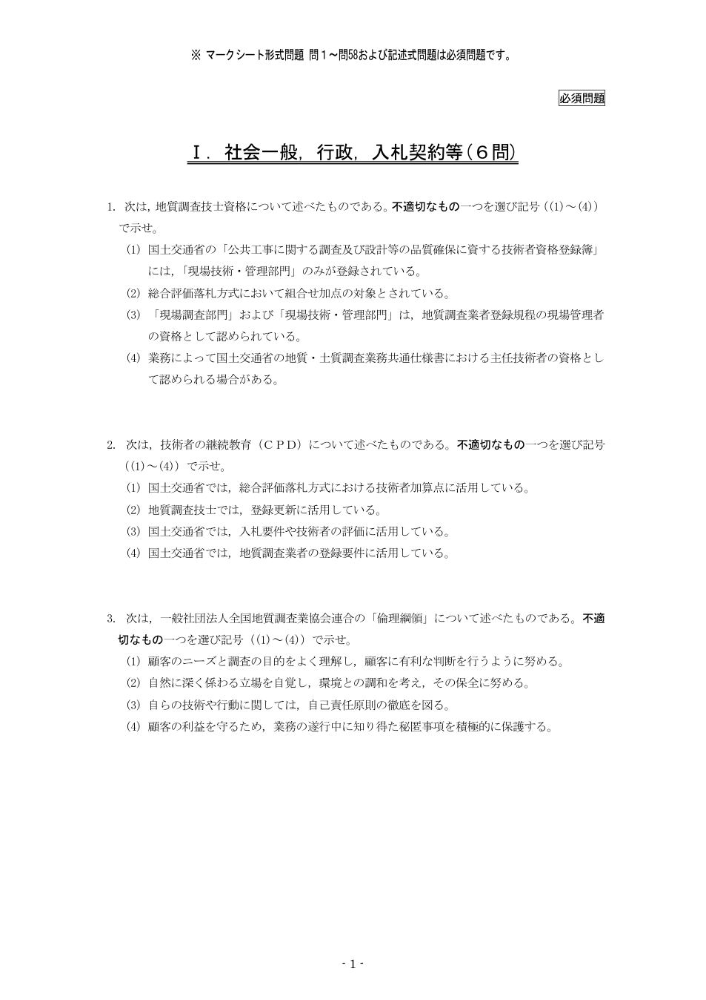
問2
必須
2. 次は，技術者の継続教育（ＣＰＤ）について述べたものである。不適切なもの一つを選び記号
（(1)～(4)）で示せ。
(1) 国土交通省では，総合評価落札方式における技術者加算点に活用している。
(2) 地質調査技士では，登録更新に活用している。
(3) 国土交通省では，入札要件や技術者の評価に活用している。
(4) 国土交通省では，地質調査業者の登録要件に活用している。
図表・イラスト確認用：PDF紙面（2ページ）を表示
問3
必須
3. 次は，一般社団法人全国地質調査業協会連合の「倫理綱領」について述べたものである。不適
切なもの一つを選び記号（(1)～(4)）で示せ。
(1) 顧客のニーズと調査の目的をよく理解し，顧客に有利な判断を行うように努める。
(2) 自然に深く係わる立場を自覚し，環境との調和を考え，その保全に努める。
(3) 自らの技術や行動に関しては，自己責任原則の徹底を図る。
(4) 顧客の利益を守るため，業務の遂行中に知り得た秘匿事項を積極的に保護する。
- 2 -
図表・イラスト確認用：PDF紙面（2ページ）を表示
問4
必須
4．次は，第三次･担い手３法について述べたものである。不適切なもの一つを選び記号（(1)～(4)）
で示せ。
(1) この改正は品確法と建設業法・入契法を一体的に見直し，発注者側の効率化を図るもので
ある。
(2) 目的は，担い手確保と地域における対応力の強化，生産性向上である。
(3) 働き方改革の推進として，発注者は，受注者や下請負人が時間外労働規制を遵守できる工
期設定に協力し，規則違反を助長しないよう十分留意することが盛り込まれた。
(4) 工期変更や契約金変更の協議の円滑化のため，受注者は資材の入手困難，高騰等の「おそれ
情報」を発注者に通知する義務があり，公共発注者は協議に応ずる義務がある。
図表・イラスト確認用：PDF紙面（3ページ）を表示
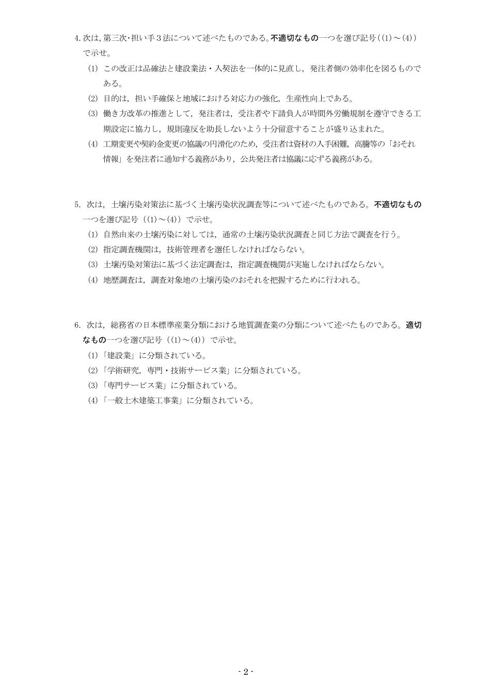
問5
必須
5．次は，土壌汚染対策法に基づく土壌汚染状況調査等について述べたものである。不適切なもの
一つを選び記号（(1)～(4)）で示せ。
(1) 自然由来の土壌汚染に対しては，通常の土壌汚染状況調査と同じ方法で調査を行う。
(2) 指定調査機関は，技術管理者を選任しなければならない。
(3) 土壌汚染対策法に基づく法定調査は，指定調査機関が実施しなければならない。
(4) 地歴調査は，調査対象地の土壌汚染のおそれを把握するために行われる。
図表・イラスト確認用：PDF紙面（3ページ）を表示
問6
必須
6．次は，総務省の日本標準産業分類における地質調査業の分類について述べたものである。適切
なもの一つを選び記号（(1)～(4)）で示せ。
(1)「建設業」に分類されている。
(2)「学術研究，専門・技術サービス業」に分類されている。
(3)「専門サービス業」に分類されている。
(4)「一般土木建築工事業」に分類されている。
- 3 -
図表・イラスト確認用：PDF紙面（3ページ）を表示
問7
必須
7．下図は，地質構造を示す概念図とその名称を示したものである。不適切な組合せ一つを選び記
号（(1)～(4)）で示せ。
(1) 同斜構造 (2) 背斜構造 (3) 正断層 (4) 右横ずれ断層
図表・イラスト確認用：PDF紙面（4ページ）を表示
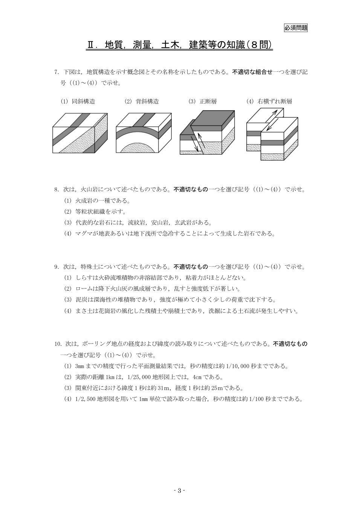
問8
必須
8．次は，火山岩について述べたものである。不適切なもの一つを選び記号（(1)～(4)）で示せ。
(1) 火成岩の一種である。
(2) 等粒状組織を示す。
(3) 代表的な岩石には，流紋岩，安山岩，玄武岩がある。
(4) マグマが地表あるいは地下浅所で急冷することによって生成した岩石である。
図表・イラスト確認用：PDF紙面（4ページ）を表示
問9
必須
9．次は，特殊土について述べたものである。不適切なもの一つを選び記号（(1)～(4)）で示せ。
(1) しらすは火砕流堆積物の非溶結部であり，粘着力がほとんどない。
(2) ロームは降下火山灰の風成層であり，乱すと強度低下が著しい。
(3) 泥炭は深海性の堆積物であり，強度が極めて小さく少しの荷重で沈下する。
(4) まさ土は花崗岩の風化した残積土や崩積土であり，洗掘による土石流が発生しやすい。
図表・イラスト確認用：PDF紙面（4ページ）を表示
問10
必須
10．次は，ボーリング地点の経度および緯度の読み取りについて述べたものである。不適切なもの
一つを選び記号（(1)～(4)）で示せ。
(1) 3mm までの精度で行った平面測量結果では，秒の精度は約1/10,000 秒までである。
(2) 実際の距離1km は，1/25,000 地形図上では，4cm である。
(3) 関東付近における緯度1 秒は約31ｍ，経度1 秒は約25ｍである。
(4) 1/2,500 地形図を用いて1mm 単位で読み取った場合，秒の精度は約1/100 秒までである。
- 4 -
図表・イラスト確認用：PDF紙面（4ページ）を表示
問11
必須
11．次は，コンクリートの劣化について示したものである。不適切な組合せ一つを選び記号（(1)
～(4)）で示せ。
図表・イラスト確認用：PDF紙面（5ページ）を表示
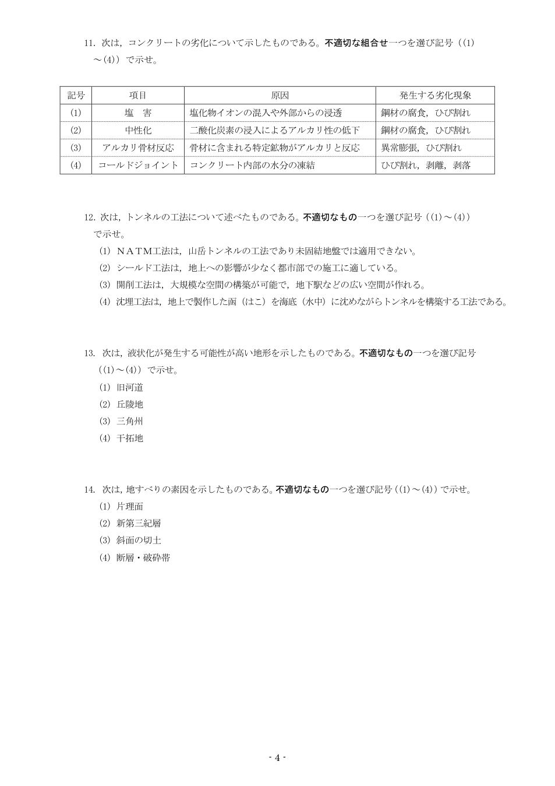
問12
必須
12．次は，トンネルの工法について述べたものである。不適切なもの一つを選び記号（(1)～(4)）
で示せ。
(1) ＮＡＴＭ工法は，山岳トンネルの工法であり未固結地盤では適用できない。
(2) シールド工法は，地上への影響が少なく都市部での施工に適している。
(3) 開削工法は，大規模な空間の構築が可能で，地下駅などの広い空間が作れる。
(4) 沈埋工法は，地上で製作した函（はこ）を海底（水中）に沈めながらトンネルを構築する工法である。
図表・イラスト確認用：PDF紙面（5ページ）を表示
問13
必須
13. 次は，液状化が発生する可能性が高い地形を示したものである。不適切なもの一つを選び記号
（(1)～(4)）で示せ。
(1) 旧河道
(2) 丘陵地
(3) 三角州
(4) 干拓地
図表・イラスト確認用：PDF紙面（5ページ）を表示
問14
必須
14. 次は，地すべりの素因を示したものである。不適切なもの一つを選び記号（(1)～(4)）で示せ。
(1) 片理面
(2) 新第三紀層
(3) 斜面の切土
(4) 断層・破砕帯
記号
項目
原因
発生する劣化現象
(1)
塩 害
塩化物イオンの混入や外部からの浸透
鋼材の腐食，ひび割れ
(2)
中性化
二酸化炭素の浸入によるアルカリ性の低下
鋼材の腐食，ひび割れ
(3)
アルカリ骨材反応
骨材に含まれる特定鉱物がアルカリと反応
異常膨張，ひび割れ
(4)
コールドジョイント コンクリート内部の水分の凍結
ひび割れ，剥離，剥落
- 5 -
図表・イラスト確認用：PDF紙面（5ページ）を表示
問15
必須
15．下表は，油圧フィード式スピンドル型ボーリングマシンの操作レバーの説明を示したものであ
る。表中の空欄 Ａ ～ Ｄ に当てはまる語句の適切な組合せ一つを選び記号（(1)～(4)）
で示せ。
操作レバー名称
操作内容
メインクラッチレバー
原動機からの Ａ の伝達，遮断を行う
Ｂ レバー
スピンドル回転数とドラム巻揚速度の調整を行う
ホイスチングレバー，
ブレーキレバー
ドラムによるドリルストリングスなどの Ｃ に使用
し，ホイスト，ブレーキ制動を行う
Ｄ 切換レバー
スピンドルの前進，後退，中立の切換を行う
記号
Ａ
Ｂ
Ｃ
Ｄ
(1)
(2)
(3)
(4)
回転動力
電
気
電
気
給進力
チェンジ
スピンドル
ド
ラ
ム
スピンドル
揚降管作業
掘削作業
揚降管作業
掘削作業
フィード
フィード
スピンドル
ブレーキ
図表・イラスト確認用：PDF紙面（6ページ）を表示
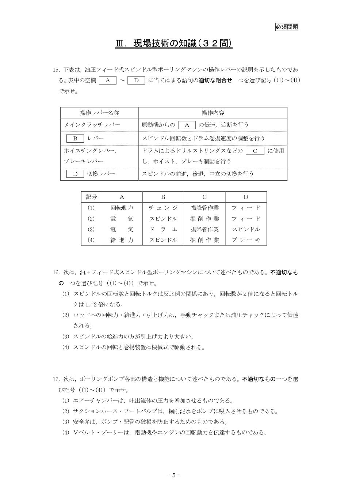
問16
必須
16．次は，油圧フィード式スピンドル型ボーリングマシンについて述べたものである。不適切なも
の一つを選び記号（(1)～(4)）で示せ。
(1) スピンドルの回転数と回転トルクは反比例の関係にあり，回転数が２倍になると回転トル
クは1／2 倍になる。
(2) ロッドへの回転力・給進力・引上げ力は，手動チャックまたは油圧チャックによって伝達
される。
(3) スピンドルの給進力の方が引上げ力より大きい。
(4) スピンドルの回転と巻揚装置は機械式で駆動される。
図表・イラスト確認用：PDF紙面（6ページ）を表示
問17
必須
17．次は，ボーリングポンプ各部の構造と機能について述べたものである。不適切なもの一つを選
び記号（(1)～(4)）で示せ。
(1) エアーチャンバーは，吐出流体の圧力を増加させるものである。
(2) サクションホース・フートバルブは，掘削泥水をポンプに吸入させるものである。
(3) 安全弁は，ポンプ・配管の破損を防止するためのものである。
(4) Ｖベルト・プーリーは，電動機やエンジンの回転動力を伝達するものである。
- 6 -
図表・イラスト確認用：PDF紙面（6ページ）を表示
問18
必須
18．次は，ボーリングポンプを取り扱う際の注意事項について述べたものである。不適切なもの一
つを選び記号（(1)～(4)）で示せ。
(1) クランクケースの回転部には, 泥水が入らないよう十分注意する。
(2) 冬季には, ポンプ・ホース・配管などの凍結に注意し，作業終了時に完全に水抜きを行う。
(3) 異物を吸込むとバルブの動作不良の原因となるため，吸入口には金網などを用いる。
(4) 泥水の吸込み高さが高いほど効率が良くなるので，ポンプ本体と吸入口の高低差はなるべ
く大きくする。
図表・イラスト確認用：PDF紙面（7ページ）を表示
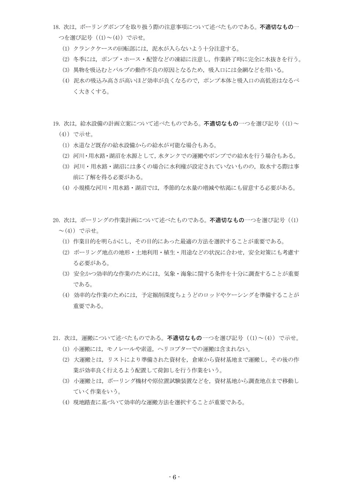
問19
必須
19．次は，給水設備の計画立案について述べたものである。不適切なもの一つを選び記号（(1)～
(4)）で示せ。
(1) 水道など既存の給水設備からの給水が可能な場合もある。
(2) 河川・用水路・湖沼を水源として，水タンクでの運搬やポンプでの給水を行う場合もある。
(3) 河川・用水路・湖沼には多くの場合に水利権が設定されていないものの，取水する際は事
前に了解を得る必要がある。
(4) 小規模な河川・用水路・湖沼では，季節的な水量の増減や枯渇にも留意する必要がある。
図表・イラスト確認用：PDF紙面（7ページ）を表示
問20
必須
20．次は，ボーリングの作業計画について述べたものである。不適切なもの一つを選び記号（(1)
～(4)）で示せ。
(1) 作業目的を明らかにし，その目的にあった最適の方法を選択することが重要である。
(2) ボーリング地点の地形・土地利用・植生・用途などの状況に合わせ，安全対策にも考慮す
る必要がある。
(3) 安全かつ効率的な作業のためには，気象・海象に関する条件を十分に調査することが重要
である。
(4) 効率的な作業のためには，予定掘削深度ちょうどのロッドやケーシングを準備することが
重要である。
図表・イラスト確認用：PDF紙面（7ページ）を表示
問21
必須
21．次は，運搬について述べたものである。不適切なもの一つを選び記号（(1)～(4)）で示せ。
(1) 小運搬には，モノレールや索道，ヘリコプターでの運搬は含まれない。
(2) 大運搬とは，リストにより準備された資材を，倉庫から資材基地まで運搬し，その後の作
業が効率良く行えるよう配置して荷卸しを行う作業をいう。
(3) 小運搬とは，ボーリング機材や原位置試験装置などを，資材基地から調査地点まで移動し
ていく作業をいう。
(4) 現地踏査に基づいて効率的な運搬方法を選択することが重要である。
- 7 -
図表・イラスト確認用：PDF紙面（7ページ）を表示
問22
必須
22．次は，平坦地足場における板材足場と嵩（かさ）上げ足場ついて述べたものである。不適切な
もの一つを選び記号（(1)～(4)）で示せ。
(1) どちらの足場も傾斜15°未満の平坦地を対象としている。
(2) サンプリングやオールコアボーリングなどスピンドルの下部に作業空間が必要な場合は，
板材足場を適用する。
(3) 嵩上げ足場のほうが設置するための時間と労力がかかる。
(4) 現場条件や作業内容などを確認して，仕様書との相違がなければ，仕様書どおりの足場を
設置する。
板材足場の例 嵩上げ足場の例
図表・イラスト確認用：PDF紙面（8ページ）を表示
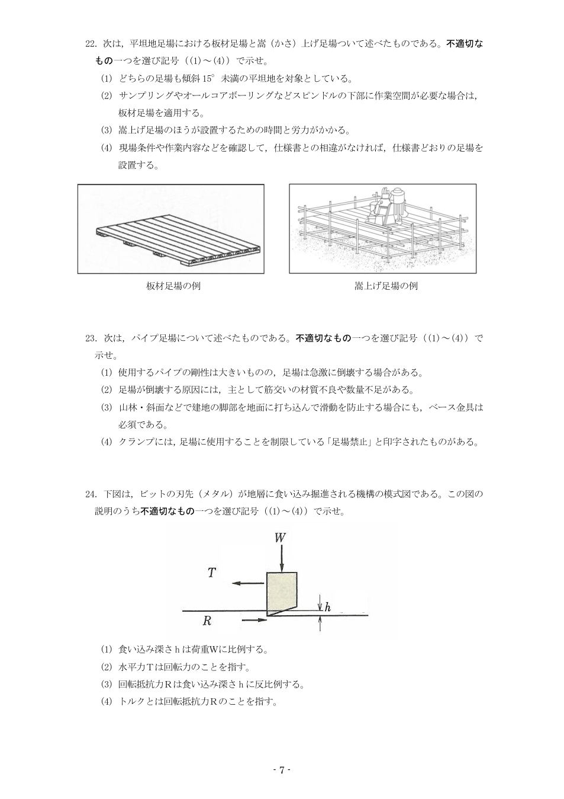
問23
必須
23．次は，パイプ足場について述べたものである。不適切なもの一つを選び記号（(1)～(4)）で
示せ。
(1) 使用するパイプの剛性は大きいものの，足場は急激に倒壊する場合がある。
(2) 足場が倒壊する原因には，主として筋交いの材質不良や数量不足がある。
(3) 山林・斜面などで建地の脚部を地面に打ち込んで滑動を防止する場合にも，ベース金具は
必須である。
(4) クランプには，足場に使用することを制限している「足場禁止」と印字されたものがある。
図表・イラスト確認用：PDF紙面（8ページ）を表示
問24
必須
24．下図は，ビットの刃先（メタル）が地層に食い込み掘進される機構の模式図である。この図の
説明のうち不適切なもの一つを選び記号（(1)～(4)）で示せ。
(1) 食い込み深さh は荷重Ｗに比例する。
(2) 水平力Ｔは回転力のことを指す。
(3) 回転抵抗力Ｒは食い込み深さh に反比例する。
(4) トルクとは回転抵抗力Ｒのことを指す。
- 8 -
図表・イラスト確認用：PDF紙面（8ページ）を表示
問25
必須
25．次は，掘進時の荷重について述べたものである。不適切なもの一つを選び記号（(1)～(4)）で
示せ。
(1) 過剰な荷重をかけると，ロッドの摩耗や孔壁損傷などが生じやすくなる。
(2) 適正な荷重であれば，荷重と掘進速度は比例する。
(3) ビット荷重の大部分はボーリングマシンによる給圧で，ロッドの自重は無視できる。
(4) 過剰な荷重をかけると，ロッドが湾曲し孔曲がりが発生することがある。
図表・イラスト確認用：PDF紙面（9ページ）を表示
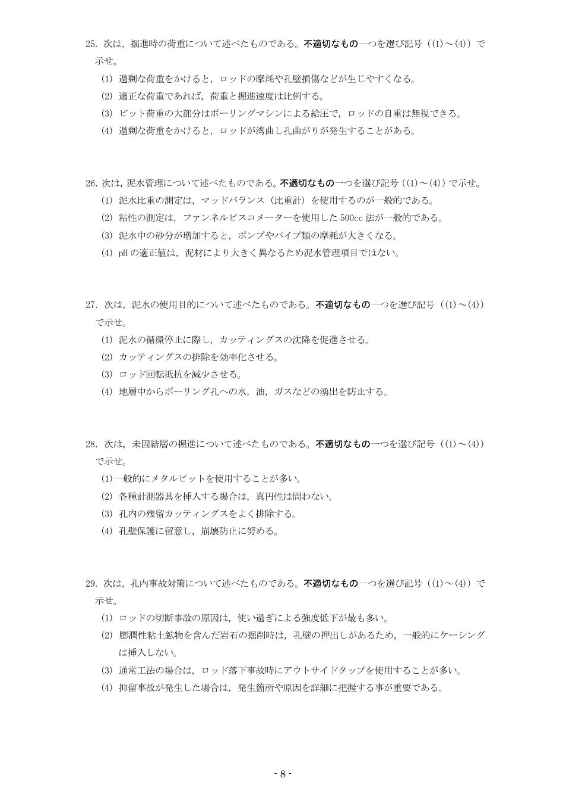
問26
必須
26．次は，泥水管理について述べたものである。不適切なもの一つを選び記号（(1)～(4)）で示せ。
(1) 泥水比重の測定は，マッドバランス（比重計）を使用するのが一般的である。
(2) 粘性の測定は，ファンネルビスコメーターを使用した500cc 法が一般的である。
(3) 泥水中の砂分が増加すると，ポンプやパイプ類の摩耗が大きくなる。
(4) pH の適正値は，泥材により大きく異なるため泥水管理項目ではない。
図表・イラスト確認用：PDF紙面（9ページ）を表示
問27
必須
27．次は，泥水の使用目的について述べたものである。不適切なもの一つを選び記号（(1)～(4)）
で示せ。
(1) 泥水の循環停止に際し，カッティングスの沈降を促進させる。
(2) カッティングスの排除を効率化させる。
(3) ロッド回転抵抗を減少させる。
(4) 地層中からボーリング孔への水，油，ガスなどの湧出を防止する。
図表・イラスト確認用：PDF紙面（9ページ）を表示
問28
必須
28．次は，未固結層の掘進について述べたものである。不適切なもの一つを選び記号（(1)～(4)）
で示せ。
(1)一般的にメタルビットを使用することが多い。
(2) 各種計測器具を挿入する場合は，真円性は問わない。
(3) 孔内の残留カッティングスをよく排除する。
(4) 孔壁保護に留意し，崩壊防止に努める。
図表・イラスト確認用：PDF紙面（9ページ）を表示
問29
必須
29．次は，孔内事故対策について述べたものである。不適切なもの一つを選び記号（(1)～(4)）で
示せ。
(1) ロッドの切断事故の原因は，使い過ぎによる強度低下が最も多い。
(2) 膨潤性粘土鉱物を含んだ岩石の掘削時は，孔壁の押出しがあるため，一般的にケーシング
は挿入しない。
(3) 通常工法の場合は，ロッド落下事故時にアウトサイドタップを使用することが多い。
(4) 抑留事故が発生した場合は，発生箇所や原因を詳細に把握する事が重要である。
- 9 -
図表・イラスト確認用：PDF紙面（9ページ）を表示
問30
必須
30．次は，抑留対策について述べたものである。不適切なもの一つを選び記号（(1)～(4)）で示せ。
(1) 掘進中は常にポンプの圧力に留意するとともに，給圧およびトルクの増加などをすばやく
察知し対応する。
(2) 孔底にカッティングスが多くなったと判断した場合は，孔内状況の改善を図る。
(3) ロッドの回転を止めておく場合は，循環水を送り保孔とカッティングスの沈殿を防ぐ。
(4) 掘進を一時的に停止する場合は，孔壁崩壊防止のためコアバレルを孔底まで降ろしておく。
図表・イラスト確認用：PDF紙面（10ページ）を表示
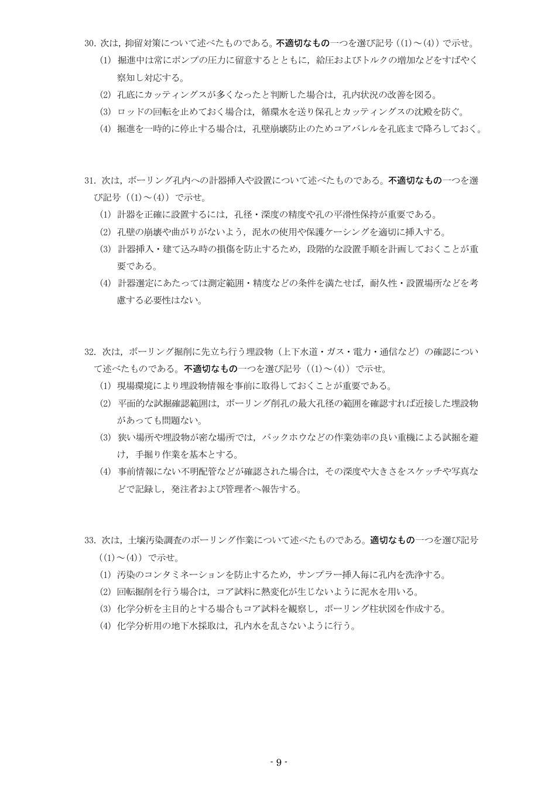
問31
必須
31．次は，ボーリング孔内への計器挿入や設置について述べたものである。不適切なもの一つを選
び記号（(1)～(4)）で示せ。
(1) 計器を正確に設置するには，孔径・深度の精度や孔の平滑性保持が重要である。
(2) 孔壁の崩壊や曲がりがないよう，泥水の使用や保護ケーシングを適切に挿入する。
(3) 計器挿入・建て込み時の損傷を防止するため，段階的な設置手順を計画しておくことが重
要である。
(4) 計器選定にあたっては測定範囲・精度などの条件を満たせば，耐久性・設置場所などを考
慮する必要性はない。
図表・イラスト確認用：PDF紙面（10ページ）を表示
問32
必須
32．次は，ボーリング掘削に先立ち行う埋設物（上下水道・ガス・電力・通信など）の確認につい
て述べたものである。不適切なもの一つを選び記号（(1)～(4)）で示せ。
(1) 現場環境により埋設物情報を事前に取得しておくことが重要である。
(2) 平面的な試掘確認範囲は，ボーリング削孔の最大孔径の範囲を確認すれば近接した埋設物
があっても問題ない。
(3) 狭い場所や埋設物が密な場所では，バックホウなどの作業効率の良い重機による試掘を避
け，手掘り作業を基本とする。
(4) 事前情報にない不明配管などが確認された場合は，その深度や大きさをスケッチや写真な
どで記録し，発注者および管理者へ報告する。
図表・イラスト確認用：PDF紙面（10ページ）を表示
問33
必須
33．次は，土壌汚染調査のボーリング作業について述べたものである。適切なもの一つを選び記号
（(1)～(4)）で示せ。
(1) 汚染のコンタミネーションを防止するため，サンプラー挿入毎に孔内を洗浄する。
(2) 回転掘削を行う場合は，コア試料に熱変化が生じないように泥水を用いる。
(3) 化学分析を主目的とする場合もコア試料を観察し，ボーリング柱状図を作成する。
(4) 化学分析用の地下水採取は，孔内水を乱さないように行う。
- 10 -
図表・イラスト確認用：PDF紙面（10ページ）を表示
問34
必須
34．次は，ロータリー式三重管サンプラーによる土試料の採取方法（JGS 1223-2012）について述
べたものである。不適切なもの一つを選び記号（(1)～(4)）で示せ。
(1) アウターチューブとインナーチューブとは，個別に連結されている。
(2) メタルクラウン下端からのシューの突出長さは，地盤に応じて調整可能である。
(3) ライナーは，内面が粗めで十分な強度を有する円筒管とする。
(4) インナーチューブとライナーは，密着していなくてはならない。
図表・イラスト確認用：PDF紙面（11ページ）を表示
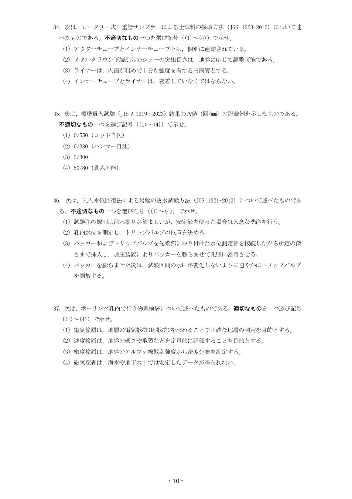
問35
必須
35．次は，標準貫入試験（JIS A 1219：2023）結果のＮ値（回/mm）の記載例を示したものである。
不適切なもの一つを選び記号（(1)～(4)）で示せ。
(1) 0/550（ロッド自沈）
(2) 0/330（ハンマー自沈）
(3) 2/300
(4) 50/80（貫入不能）
図表・イラスト確認用：PDF紙面（11ページ）を表示
問36
必須
36. 次は，孔内水位回復法による岩盤の透水試験方法（JGS 1321-2012）について述べたものであ
る。不適切なもの一つを選び記号（(1)～(4)）で示せ。
(1) 試験孔の掘削は清水掘りが望ましいが，安定液を使った場合は入念な洗浄を行う。
(2) 孔内水位を測定し，トリップバルブの位置を決める。
(3) パッカーおよびトリップバルブを先端部に取り付けた水位測定管を接続しながら所定の深
さまで挿入し，加圧装置によりパッカーを膨らませて孔壁に密着させる。
(4) パッカーを膨らませた後は，試験区間の水圧が変化しないように速やかにトリップバルブ
を開放する。
図表・イラスト確認用：PDF紙面（11ページ）を表示
問37
必須
37．次は，ボーリング孔内で行う物理検層について述べたものである。適切なものを一つ選び記号
（(1)～(4)）で示せ。
(1) 電気検層は，地層の電気抵抗(比抵抗)を求めることで正確な地層の判定を目的とする。
(2) 速度検層は，地盤の硬さや亀裂などを定量的に評価することを目的とする。
(3) 密度検層は，地盤のアルファ線散乱強度から密度分布を測定する。
(4) 磁気探査は，海水や地下水中では安定したデータが得られない。
- 11 -
図表・イラスト確認用：PDF紙面（11ページ）を表示
問38
必須
38．下図は，地盤材料の粒径区分とその呼び名（構成粒子）を示したものである。図中
Ａ ～ Ｄ に当てはまる数値の適切な組合せ一つを選び記号（(1)～(4)）で示せ。
記号
Ａ
Ｂ
Ｃ
Ｄ
(1)
(2)
(3)
(4)
シルト粒子
粘土粒子
粘土粒子
シルト粒子
粘土粒子
シルト粒子
シルト粒子
粘土粒子
2
5
2
5
50
75
75
50
図表・イラスト確認用：PDF紙面（12ページ）を表示
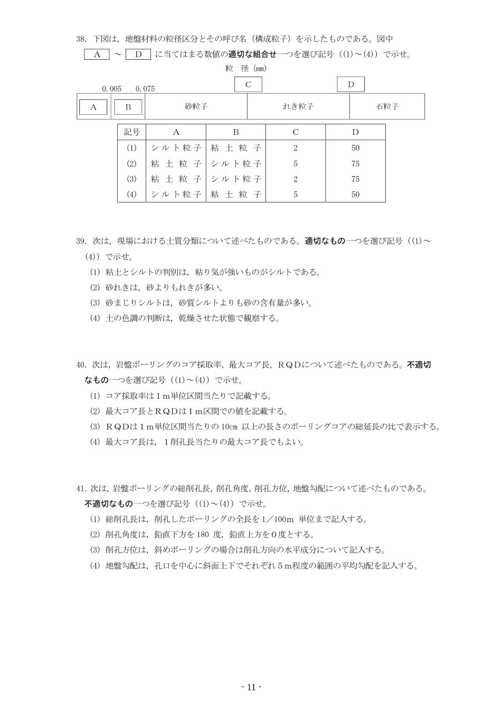
問39
必須
39．次は，現場における土質分類について述べたものである。適切なもの一つを選び記号（(1)～
(4)）で示せ。
(1) 粘土とシルトの判別は，粘り気が強いものがシルトである。
(2) 砂れきは，砂よりもれきが多い。
(3) 砂まじりシルトは，砂質シルトよりも砂の含有量が多い。
(4) 土の色調の判断は，乾燥させた状態で観察する。
図表・イラスト確認用：PDF紙面（12ページ）を表示
問40
必須
40．次は，岩盤ボーリングのコア採取率，最大コア長，ＲＱＤについて述べたものである。不適切
なもの一つを選び記号（(1)～(4)）で示せ。
(1) コア採取率は１ｍ単位区間当たりで記載する。
(2) 最大コア長とＲＱＤは１ｍ区間での値を記載する。
(3) ＲＱＤは１ｍ単位区間当たりの10cm 以上の長さのボーリングコアの総延長の比で表示する。
(4) 最大コア長は，１削孔長当たりの最大コア長でもよい。
図表・イラスト確認用：PDF紙面（12ページ）を表示
問41
必須
41．次は，岩盤ボーリングの総削孔長，削孔角度，削孔方位，地盤勾配について述べたものである。
不適切なもの一つを選び記号（(1)～(4)）で示せ。
(1) 総削孔長は，削孔したボーリングの全長を1／100ｍ 単位まで記入する。
(2) 削孔角度は，鉛直下方を180 度，鉛直上方を０度とする。
(3) 削孔方位は，斜めボーリングの場合は削孔方向の水平成分について記入する。
(4) 地盤勾配は，孔口を中心に斜面上下でそれぞれ５ｍ程度の範囲の平均勾配を記入する。
- 12 -
図表・イラスト確認用：PDF紙面（12ページ）を表示
問42
必須
42. 次は，ボーリング柱状図の標題欄の記入要領について述べたものである。不適切なもの一つを
選び記号（（1)～(4））で示せ。
なお，記入要領は，一般社団法人全国地質調査業協会連合会「ボーリング柱状図作成及びボー
リングコア取扱い・保管要領（案）・同解説」(平成27 年６月)に準じるものとする。
(1) 総削孔長は，削孔したボーリングの全長を1／100ｍ単位まで記入する。
(2) 緯度および経度は，ボーリング調査を行う敷地の中心位置を記入する。
(3) 調査位置は，ボーリング孔口位置の地名を番地まで記入する。
(4) 調査名は，設計図書に示されている正式な業務名称を省略せずに記入する。
図表・イラスト確認用：PDF紙面（13ページ）を表示
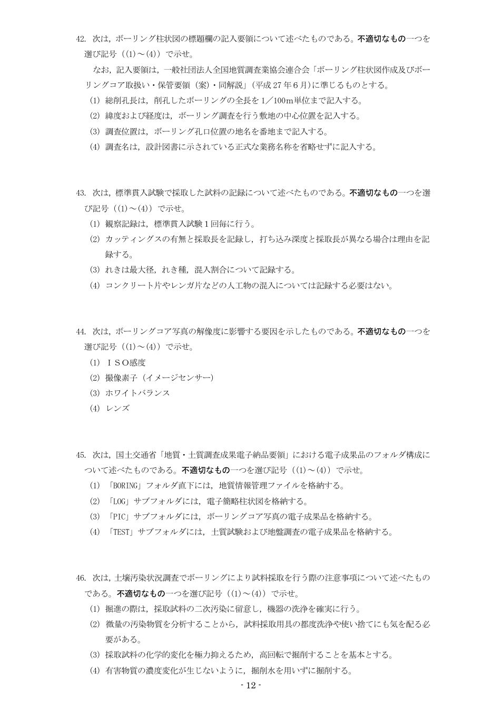
問43
必須
43. 次は，標準貫入試験で採取した試料の記録について述べたものである。不適切なもの一つを選
び記号（(1)～(4)）で示せ。
(1) 観察記録は，標準貫入試験１回毎に行う。
(2) カッティングスの有無と採取長を記録し，打ち込み深度と採取長が異なる場合は理由を記
録する。
(3) れきは最大径，れき種，混入割合について記録する。
(4) コンクリート片やレンガ片などの人工物の混入については記録する必要はない。
図表・イラスト確認用：PDF紙面（13ページ）を表示
問44
必須
44. 次は，ボーリングコア写真の解像度に影響する要因を示したものである。不適切なもの一つを
選び記号（(1)～(4)）で示せ。
(1) ＩＳＯ感度
(2) 撮像素子（イメージセンサー）
(3) ホワイトバランス
(4) レンズ
図表・イラスト確認用：PDF紙面（13ページ）を表示
問45
必須
45. 次は，国土交通省「地質・土質調査成果電子納品要領」における電子成果品のフォルダ構成に
ついて述べたものである。不適切なもの一つを選び記号（(1)～(4)）で示せ。
(1) 「BORING」フォルダ直下には，地質情報管理ファイルを格納する。
(2) 「LOG」サブフォルダには，電子簡略柱状図を格納する。
(3) 「PIC」サブフォルダには，ボーリングコア写真の電子成果品を格納する。
(4) 「TEST」サブフォルダには，土質試験および地盤調査の電子成果品を格納する。
図表・イラスト確認用：PDF紙面（13ページ）を表示
問46
必須
46. 次は，土壌汚染状況調査でボーリングにより試料採取を行う際の注意事項について述べたもの
である。不適切なもの一つを選び記号（(1)～(4)）で示せ。
(1) 掘進の際は，採取試料の二次汚染に留意し，機器の洗浄を確実に行う。
(2) 微量の汚染物質を分析することから，試料採取用具の都度洗浄や使い捨てにも気を配る必
要がある。
(3) 採取試料の化学的変化を極力抑えるため，高回転で掘削することを基本とする。
(4) 有害物質の濃度変化が生じないように，掘削水を用いずに掘削する。
- 13 -
図表・イラスト確認用：PDF紙面（13ページ）を表示
問47
必須
47．次は，地すべりにおけるボーリング調査に関する留意点について述べたものである。不適切な
もの一つを選び記号（(1)～(4)）で示せ。
(1) ボーリングはオールコア採取を原則とし，掘削孔径はボーリング孔を利用したすべり面調
査や地下水調査を考慮し適切に定める。
(2) 調査箇所は，地すべりの運動方向に設定した主測線に沿って，地すべりブロック内の中央
部にあたる１箇所で行うことを基本とする。
(3) 調査深度は，地すべり土塊内の岩塊を基盤と見誤る場合もあることから，基盤を確認する
のに十分な深度とする。
(4) 地すべりブロックの層厚が推定不可能な場合は，原則として１本あたりの長さを地すべりブ
ロック幅の 1／3 程度と仮定し，掘進結果を参考に長さを調整する。
図表・イラスト確認用：PDF紙面（14ページ）を表示
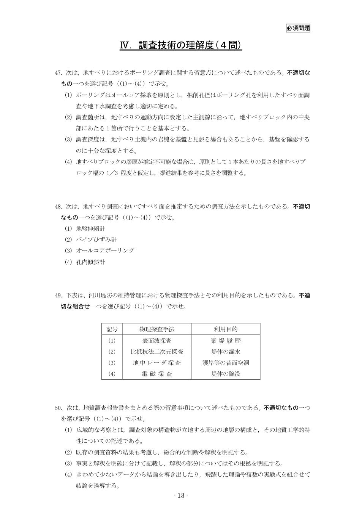
問48
必須
48．次は，地すべり調査においてすべり面を推定するための調査方法を示したものである。不適切
なもの一つを選び記号（(1)～(4)）で示せ。
(1) 地盤伸縮計
(2) パイプひずみ計
(3) オールコアボーリング
(4) 孔内傾斜計
図表・イラスト確認用：PDF紙面（14ページ）を表示
問49
必須
49．下表は，河川堤防の維持管理における物理探査手法とその利用目的を示したものである。不適
切な組合せ一つを選び記号（(1)～(4)）で示せ。
記号
物理探査手法
利用目的
(1)
表面波探査
築堤履歴
(2)
比抵抗法二次元探査
堤体の漏水
(3)
地中レーダ探査
護岸等の背面空洞
(4)
電磁探査
堤体の陥没
図表・イラスト確認用：PDF紙面（14ページ）を表示
問50
必須
50. 次は，地質調査報告書をまとめる際の留意事項について述べたものである。不適切なもの一つ
を選び記号（(1)～(4)）で示せ。
(1) 広域的な考察とは，調査対象の構造物が立地する周辺の地層の構成と，その地質工学的特
性についての記述である。
(2) 既存の調査資料の結果も考慮し，総合的な判断や解釈を明記する。
(3) 事実と解釈を明確に分けて記載し，解釈の部分についてはその根拠を明記する。
(4) きわめて少ないデータから結論を導き出したり，飛躍した理論や複数の実験式を組合せて
結論を誘導する。
- 14 -
図表・イラスト確認用：PDF紙面（14ページ）を表示
問51
必須
51．次は，労働安全衛生法で指定されている技能講習の受講で従事可能な作業を示したものである。
不適切なもの一つを選び記号（(1)～(4)）で示せ。
(1) 特定粉じん作業
(2) 10kN 以上の玉掛け
(3) ガス溶接
(4) 10kN 以上の不整地運搬車運転
図表・イラスト確認用：PDF紙面（15ページ）を表示
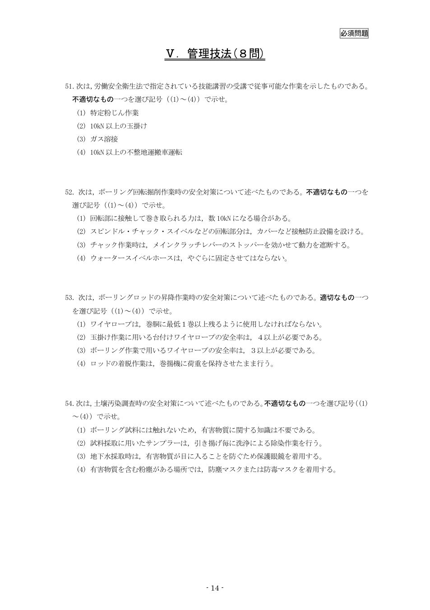
問52
必須
52．次は，ボーリング回転掘削作業時の安全対策について述べたものである。不適切なもの一つを
選び記号（(1)～(4)）で示せ。
(1) 回転部に接触して巻き取られる力は，数10kN になる場合がある。
(2) スピンドル・チャック・スイベルなどの回転部分は，カバーなど接触防止設備を設ける。
(3) チャック作業時は，メインクラッチレバーのストッパーを効かせて動力を遮断する。
(4) ウォータースイベルホースは，やぐらに固定させてはならない。
図表・イラスト確認用：PDF紙面（15ページ）を表示
問53
必須
53．次は，ボーリングロッドの昇降作業時の安全対策について述べたものである。適切なもの一つ
を選び記号（(1)～(4)）で示せ。
(1) ワイヤロープは，巻胴に最低１巻以上残るように使用しなければならない。
(2) 玉掛け作業に用いる台付けワイヤロープの安全率は，４以上が必要である。
(3) ボーリング作業で用いるワイヤロープの安全率は，３以上が必要である。
(4) ロッドの着脱作業は，巻揚機に荷重を保持させたまま行う。
図表・イラスト確認用：PDF紙面（15ページ）を表示
問54
必須
54．次は，土壌汚染調査時の安全対策について述べたものである。不適切なもの一つを選び記号（(1)
～(4)）で示せ。
(1) ボーリング試料には触れないため，有害物質に関する知識は不要である。
(2) 試料採取に用いたサンプラーは，引き揚げ毎に洗浄による除染作業を行う。
(3) 地下水採取時は，有害物質が目に入ることを防ぐため保護眼鏡を着用する。
(4) 有害物質を含む粉塵がある場所では，防塵マスクまたは防毒マスクを着用する。
- 15 -
図表・イラスト確認用：PDF紙面（15ページ）を表示
問55
必須
55．次は，地質調査業務で用いられる実施工程図について述べたものである。適切なもの一つを選
び記号（(1)～(4)）で示せ。
(1) 曲線式工程図は，クリティカルパスを見つけ工期を最適化する検討に適している。
(2) ネットワーク式工程図は，工種毎の関係が複雑な作業には適さない。
(3) ガントチャートは，各工程の所要日数が明確で他工種との関係が明確に理解できる。
(4) バーチャート工程図は，工種毎の所要日数が明確で，各工種との相関性もある程度理解で
きる。
図表・イラスト確認用：PDF紙面（16ページ）を表示
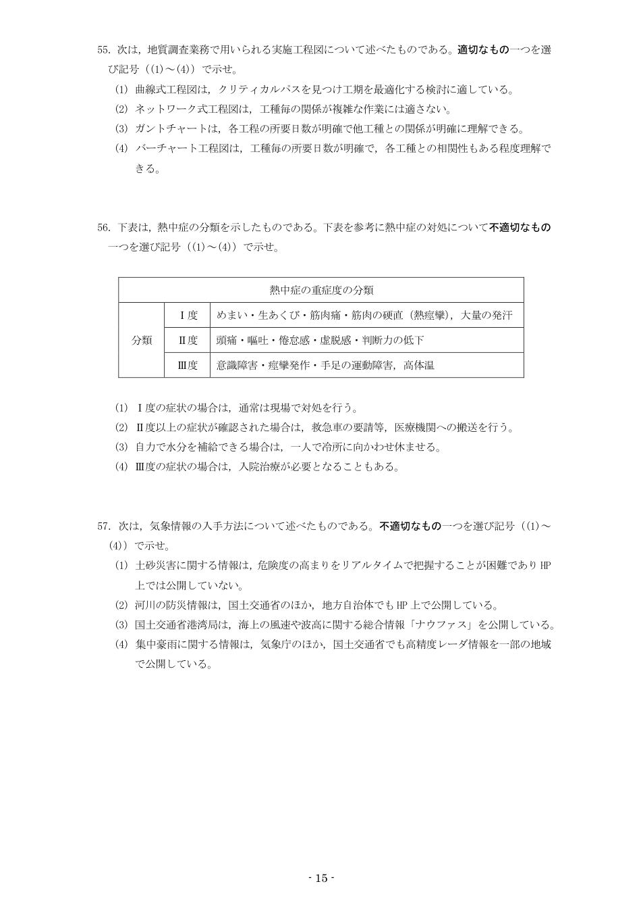
問56
必須
56．下表は，熱中症の分類を示したものである。下表を参考に熱中症の対処について不適切なもの
一つを選び記号（(1)～(4)）で示せ。
(1) Ⅰ度の症状の場合は，通常は現場で対処を行う。
(2) Ⅱ度以上の症状が確認された場合は，救急車の要請等，医療機関への搬送を行う。
(3) 自力で水分を補給できる場合は，一人で冷所に向かわせ休ませる。
(4) Ⅲ度の症状の場合は，入院治療が必要となることもある。
図表・イラスト確認用：PDF紙面（16ページ）を表示
問57
必須
57．次は，気象情報の入手方法について述べたものである。不適切なもの一つを選び記号（(1)～
(4)）で示せ。
(1) 土砂災害に関する情報は，危険度の高まりをリアルタイムで把握することが困難でありHP
上では公開していない。
(2) 河川の防災情報は，国土交通省のほか，地方自治体でもHP 上で公開している。
(3) 国土交通省港湾局は，海上の風速や波高に関する総合情報「ナウファス」を公開している。
(4) 集中豪雨に関する情報は，気象庁のほか，国土交通省でも高精度レーダ情報を一部の地域
で公開している。
熱中症の重症度の分類
分類
Ⅰ度
めまい・生あくび・筋肉痛・筋肉の硬直（熱痙攣），大量の発汗
Ⅱ度
頭痛・嘔吐・倦怠感・虚脱感・判断力の低下
Ⅲ度
意識障害・痙攣発作・手足の運動障害，高体温
- 16 -
図表・イラスト確認用：PDF紙面（16ページ）を表示
問58
必須
58．次は，気象警報と注意報について述べたものである。不適切なもの一つを選び記号（(1)～(4)）
で示せ。
(1) 降雨・降雪に関する気象警報には，暴風，暴風雪，大雨（浸水害），大雨（土砂災害）があ
る。
(2) 予想される津波が３ｍの場合は大津波警報，１ｍの場合は津波警報，0.5ｍの場合は津波注
意報が発令される。
(3) 強風注意報が発令されている場合，作業中止基準に近い風が吹く可能性がある。
(4) 雷の発生が予想される場合には，発生確率に応じて雷警報が発令される。
問59から問102は，選択問題である。
以下のＡ群またはＢ群のいずれか一方を任意選択の上，解答すること。
※Ａ群，Ｂ群の選択は，受験願書で選択記載した主な調査対象「土質」，「岩盤」のい
ずれかに関わらず，任意で選択することができる。
※Ａ群およびＢ群の両方を解答している場合，選択問題の採点は行わない。
解答用紙への記入の際は，注意して記入すること。
- 18 -
図表・イラスト確認用：PDF紙面（17ページ）を表示
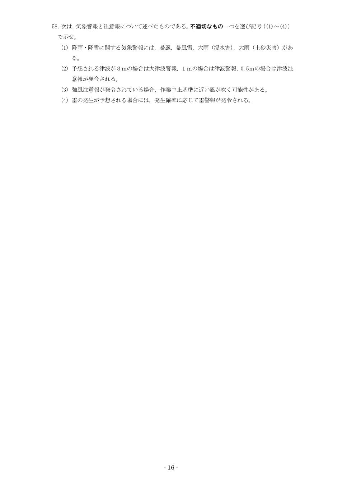
問59
A群（土質）
59．次は，ボーリングに使用される機器について述べたものである。不適切なもの一つを選び記号
（(1)～(4)）で示せ。
(1) ロッドホルダーは，ロッドを保持する器具で，浅掘り用の手動式と深掘り用の足踏み式の
ものがある。
(2) ウォータースイベルは，ポンプからの掘削流体を回転しているロッド内に送るための器具
である。
(3) メタルビットは，刃先に超硬チップを植付けたもので，硬岩～超硬岩に適している。
(4) ＰＤＣビットは，刃先に合成ダイヤモンドの粉末を焼結したもので，軟岩～中硬岩に適し
ている。
図表・イラスト確認用：PDF紙面（19ページ）を表示
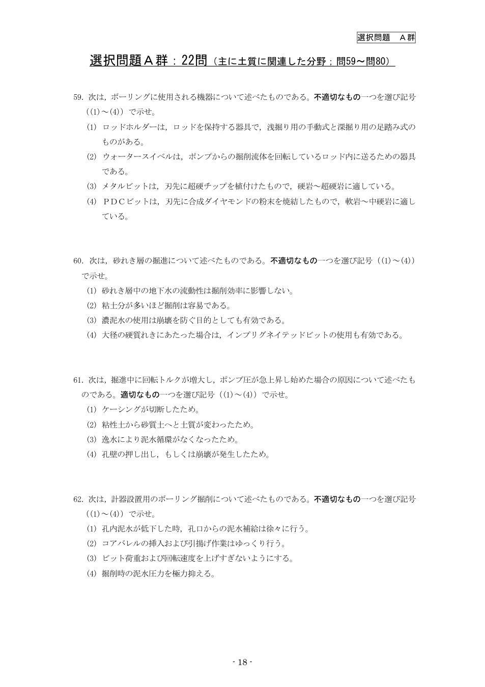
問60
A群（土質）
60．次は，砂れき層の掘進について述べたものである。不適切なもの一つを選び記号（(1)～(4)）
で示せ。
(1) 砂れき層中の地下水の流動性は掘削効率に影響しない。
(2) 粘土分が多いほど掘削は容易である。
(3) 濃泥水の使用は崩壊を防ぐ目的としても有効である。
(4) 大径の硬質れきにあたった場合は，インプリグネイテッドビットの使用も有効である。
図表・イラスト確認用：PDF紙面（19ページ）を表示
問61
A群（土質）
61．次は，掘進中に回転トルクが増大し，ポンプ圧が急上昇し始めた場合の原因について述べたも
のである。適切なもの一つを選び記号（(1)～(4)）で示せ。
(1) ケーシングが切断したため。
(2) 粘性土から砂質土へと土質が変わったため。
(3) 逸水により泥水循環がなくなったため。
(4) 孔壁の押し出し，もしくは崩壊が発生したため。
図表・イラスト確認用：PDF紙面（19ページ）を表示
問62
A群（土質）
62．次は，計器設置用のボーリング掘削について述べたものである。不適切なもの一つを選び記号
（(1)～(4)）で示せ。
(1) 孔内泥水が低下した時，孔口からの泥水補給は徐々に行う。
(2) コアバレルの挿入および引揚げ作業はゆっくり行う。
(3) ビット荷重および回転速度を上げすぎないようにする。
(4) 掘削時の泥水圧力を極力抑える。
- 19 -
図表・イラスト確認用：PDF紙面（19ページ）を表示
問63
A群（土質）
63．次は，セメンチング作業について述べたものである。不適切なもの一つを選び記号（(1)～(4)）
で示せ。
(1) セメンチングの注入量は，孔内容積のほか送水ポンプ・ホース・ロッドなどの機材容量は
考慮する必要がない。
(2) セメンチング注入時は，ロッド先端に最終削孔径と同等のコアバレルを装着することで，
孔内がよく撹拌（かくはん）され，泥水との置換効率があがる。
(3) セメンチング前に孔内を洗浄して，カッティングスや沈殿物をよく除去することが望まし
い。
(4) セメントミルクの硬化時間調整のため，塩化カルシウムやベントナイトが多く用いられる。
図表・イラスト確認用：PDF紙面（20ページ）を表示
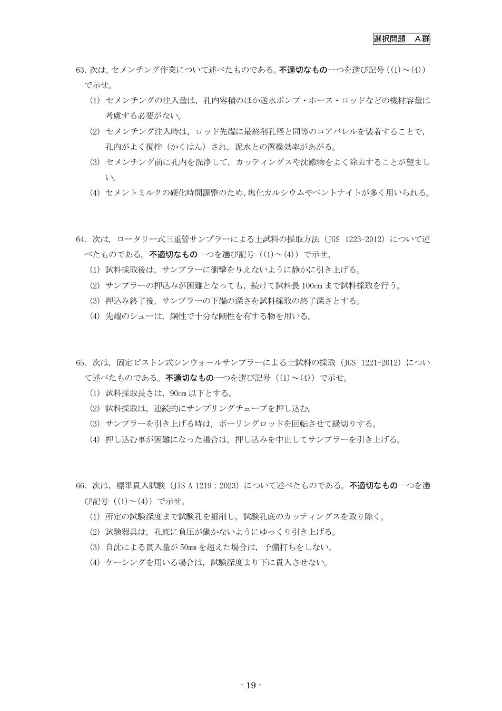
問64
A群（土質）
64．次は，ロータリー式三重管サンプラーによる土試料の採取方法（JGS 1223-2012）について述
べたものである。不適切なもの一つを選び記号（(1)～(4)）で示せ。
(1) 試料採取後は，サンプラーに衝撃を与えないように静かに引き上げる。
(2) サンプラーの押込みが困難となっても，続けて試料長100cm まで試料採取を行う。
(3) 押込み終了後，サンプラーの下端の深さを試料採取の終了深さとする。
(4) 先端のシューは，鋼性で十分な剛性を有する物を用いる。
図表・イラスト確認用：PDF紙面（20ページ）を表示
問65
A群（土質）
65．次は，固定ピストン式シンウォ－ルサンプラーによる土試料の採取（JGS 1221-2012）につい
て述べたものである。不適切なもの一つを選び記号（(1)～(4)）で示せ。
(1) 試料採取長さは，90cm 以下とする。
(2) 試料採取は，連続的にサンプリングチューブを押し込む。
(3) サンプラーを引き上げる時は，ボーリングロッドを回転させて縁切りする。
(4) 押し込む事が困難になった場合は，押し込みを中止してサンプラーを引き上げる。
図表・イラスト確認用：PDF紙面（20ページ）を表示
問66
A群（土質）
66．次は，標準貫入試験（JIS A 1219：2023）について述べたものである。不適切なもの一つを選
び記号（(1)～(4)）で示せ。
(1) 所定の試験深度まで試験孔を掘削し，試験孔底のカッティングスを取り除く。
(2) 試験器具は，孔底に負圧が働かないようにゆっくり引き上げる。
(3) 自沈による貫入量が50mm を超えた場合は，予備打ちをしない。
(4) ケーシングを用いる場合は，試験深度より下に貫入させない。
- 20 -
図表・イラスト確認用：PDF紙面（20ページ）を表示
問67
A群（土質）
67．次は，標準貫入試験（JIS A 1219：2023）について述べたものである。不適切なもの一つを選
び記号（(1)～(4)）で示せ。
(1) Ｎ値50 以上と想定される地盤では，予備打ちを本打ちに代えることができる。
(2) 本打ちは，特に必要がない限り50 回の打撃回数で打ち切る。
(3) 採取した試料は，密閉して保存する。
(4) 採取試料が２つの土層にまたがる場合は，代表する１つの土層について記録して報告する。
図表・イラスト確認用：PDF紙面（21ページ）を表示
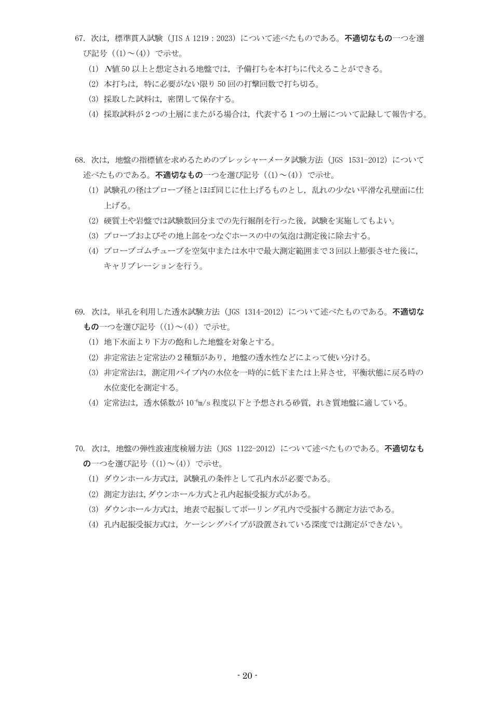
問68
A群（土質）
68．次は，地盤の指標値を求めるためのプレッシャーメータ試験方法（JGS 1531-2012）について
述べたものである。不適切なもの一つを選び記号（(1)～(4)）で示せ。
(1) 試験孔の径はプローブ径とほぼ同じに仕上げるものとし，乱れの少ない平滑な孔壁面に仕
上げる。
(2) 硬質土や岩盤では試験数回分までの先行掘削を行った後，試験を実施してもよい。
(3) プローブおよびその地上部をつなぐホースの中の気泡は測定後に除去する。
(4) プローブゴムチューブを空気中または水中で最大測定範囲まで３回以上膨張させた後に，
キャリブレーションを行う。
図表・イラスト確認用：PDF紙面（21ページ）を表示
問69
A群（土質）
69. 次は，単孔を利用した透水試験方法（JGS 1314-2012）について述べたものである。不適切な
もの一つを選び記号（(1)～(4)）で示せ。
(1) 地下水面より下方の飽和した地盤を対象とする。
(2) 非定常法と定常法の２種類があり，地盤の透水性などによって使い分ける。
(3) 非定常法は，測定用パイプ内の水位を一時的に低下または上昇させ，平衡状態に戻る時の
水位変化を測定する。
(4) 定常法は，透水係数が10-6m/s 程度以下と予想される砂質，れき質地盤に適している。
図表・イラスト確認用：PDF紙面（21ページ）を表示
問70
A群（土質）
70. 次は，地盤の弾性波速度検層方法（JGS 1122-2012）について述べたものである。不適切なも
の一つを選び記号（(1)～(4)）で示せ。
(1) ダウンホール方式は，試験孔の条件として孔内水が必要である。
(2) 測定方法は,ダウンホール方式と孔内起振受振方式がある。
(3) ダウンホール方式は，地表で起振してボーリング孔内で受振する測定方法である。
(4) 孔内起振受振方式は，ケーシングパイプが設置されている深度では測定ができない。
0
20
40
60
80
100
120
0
50
100
150
200
塑 性 指 数 IP
液 性 限 界 W L %
Ａ線：Ip=0.73(WL-20)
WL=50%
図表・イラスト確認用：PDF紙面（21ページ）を表示
問71
A群（土質）
71．次は，地盤材料の工学的分類方法（JGS 0051-2020）について述べたものである。不適切なも
の一つを選び記号（(1)～(4)）で示せ。
(1) 分類記号{SF}は，小分類の細粒分まじり砂である。
(2) 砂質れき(GS)は，三角座標上で細粒分＜5％，砂分≧15 である。
(3) 石分とは粒径75mm 以上であり，石分が50％以上含まれるものは岩石質材料である。
(4) 粗粒分＞50％，砂分≧れき分は，砂質土[S]である。
図表・イラスト確認用：PDF紙面（22ページ）を表示
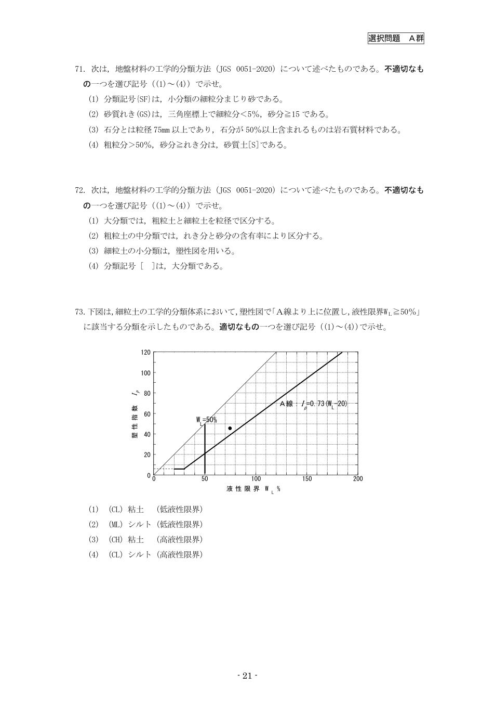
問72
A群（土質）
72．次は，地盤材料の工学的分類方法（JGS 0051-2020）について述べたものである。不適切なも
の一つを選び記号（(1)～(4)）で示せ。
(1) 大分類では，粗粒土と細粒土を粒径で区分する。
(2) 粗粒土の中分類では，れき分と砂分の含有率により区分する。
(3) 細粒土の小分類は，塑性図を用いる。
(4) 分類記号 [ ]は，大分類である。
図表・イラスト確認用：PDF紙面（22ページ）を表示
問73
A群（土質）
73．下図は，細粒土の工学的分類体系において，塑性図で「Ａ線より上に位置し，液性限界WＬ≧50％」
に該当する分類を示したものである。適切なもの一つを選び記号（(1)～(4))で示せ。
(1) （CL）粘土 （低液性限界）
(2) （ML）シルト（低液性限界）
(3) （CH）粘土 （高液性限界）
(4) （CL）シルト（高液性限界）
- 22 -
図表・イラスト確認用：PDF紙面（22ページ）を表示
問74
A群（土質）
74. 下表は，Ｎ値と砂の相対密度の関係をもとに，実測Ｎ値に対応する相対密度を表現したもので
ある。不適切なもの一つを選び記号（(1)～(4)）で示せ。
記号
実測Ｎ値
相対密度
(1)
3
非常に緩い
(2)
15
緩 い
(3)
25
中位の
(4)
35
密 な
図表・イラスト確認用：PDF紙面（23ページ）を表示
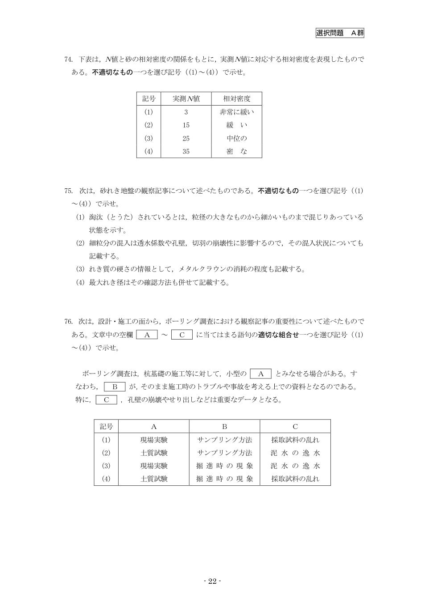
問75
A群（土質）
75. 次は，砂れき地盤の観察記事について述べたものである。不適切なもの一つを選び記号（(1)
～(4)）で示せ。
(1) 淘汰（とうた）されているとは，粒径の大きなものから細かいものまで混じりあっている
状態を示す。
(2) 細粒分の混入は透水係数や孔壁，切羽の崩壊性に影響するので，その混入状況についても
記載する。
(3) れき質の硬さの情報として，メタルクラウンの消耗の程度も記載する。
(4) 最大れき径はその確認方法も併せて記載する。
図表・イラスト確認用：PDF紙面（23ページ）を表示
問76
A群（土質）
76. 次は，設計・施工の面から，ボーリング調査における観察記事の重要性について述べたもので
ある。文章中の空欄 Ａ ～ Ｃ に当てはまる語句の適切な組合せ一つを選び記号（(1)
～(4)）で示せ。
ボーリング調査は，杭基礎の施工等に対して，小型の Ａ とみなせる場合がある。す
なわち， Ｂ が，そのまま施工時のトラブルや事故を考える上での資料となるのである。
特に， Ｃ ，孔壁の崩壊やせり出しなどは重要なデータとなる。
記号
Ａ
Ｂ
Ｃ
(1)
(2)
(3)
(4)
現場実験
土質試験
現場実験
土質試験
サンプリング方法
サンプリング方法
掘進時の現象
掘進時の現象
採取試料の乱れ
泥水の逸水
泥水の逸水
採取試料の乱れ
- 23 -
図表・イラスト確認用：PDF紙面（23ページ）を表示
問77
A群（土質）
77．次は，シールド工法における留意すべき地盤を示したものである。不適切なもの一つを選び記
号（(1)～(4)）で示せ。
(1) 被圧地下水や可燃性ガスが賦存する地盤
(2) 硬軟の地層が互層状態になっている地盤
(3) 鋭敏比の低い軟弱な低塑性の粘性土地盤
(4) 玉石および流木などが挟在する地盤
図表・イラスト確認用：PDF紙面（24ページ）を表示
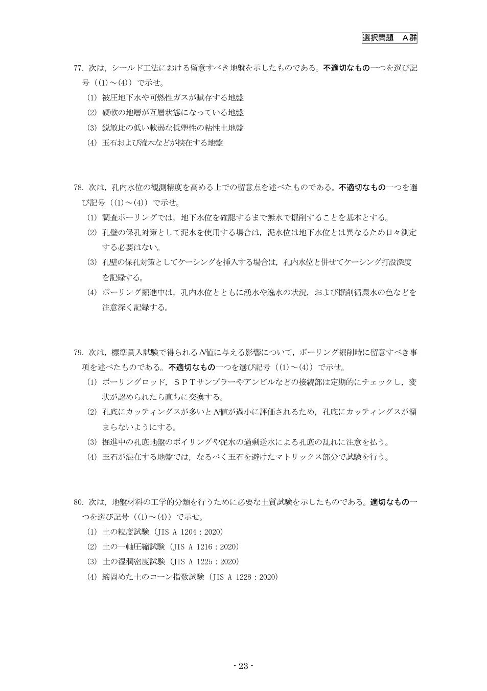
問78
A群（土質）
78．次は，孔内水位の観測精度を高める上での留意点を述べたものである。不適切なもの一つを選
び記号（(1)～(4)）で示せ。
(1) 調査ボーリングでは，地下水位を確認するまで無水で掘削することを基本とする。
(2) 孔壁の保孔対策として泥水を使用する場合は，泥水位は地下水位とは異なるため日々測定
する必要はない。
(3) 孔壁の保孔対策としてケーシングを挿入する場合は，孔内水位と併せてケーシング打設深度
を記録する。
(4) ボーリング掘進中は，孔内水位とともに湧水や逸水の状況，および掘削循環水の色などを
注意深く記録する。
図表・イラスト確認用：PDF紙面（24ページ）を表示
問79
A群（土質）
79．次は，標準貫入試験で得られるＮ値に与える影響について，ボーリング掘削時に留意すべき事
項を述べたものである。不適切なもの一つを選び記号（(1)～(4)）で示せ。
(1) ボーリングロッド，ＳＰＴサンプラーやアンビルなどの接続部は定期的にチェックし，変
状が認められたら直ちに交換する。
(2) 孔底にカッティングスが多いとＮ値が過小に評価されるため，孔底にカッティングスが溜
まらないようにする。
(3) 掘進中の孔底地盤のボイリングや泥水の過剰送水による孔底の乱れに注意を払う。
(4) 玉石が混在する地盤では，なるべく玉石を避けたマトリックス部分で試験を行う。
図表・イラスト確認用：PDF紙面（24ページ）を表示
問80
A群（土質）
80．次は，地盤材料の工学的分類を行うために必要な土質試験を示したものである。適切なもの一
つを選び記号（(1)～(4)）で示せ。
(1) 土の粒度試験（JIS A 1204：2020）
(2) 土の一軸圧縮試験（JIS A 1216：2020）
(3) 土の湿潤密度試験（JIS A 1225：2020）
(4) 締固めた土のコーン指数試験（JIS A 1228：2020）
- 24 -
図表・イラスト確認用：PDF紙面（24ページ）を表示
問81
B群（岩盤）
81．次は，ケーシングの機能を示したものである。文章中の空欄 Ａ ～ Ｄ に当てはまる
語句の適切な組合せ一つを選び記号（(1)～(4)）で示せ。
① 孔壁の Ａ 防止
② 地下水や Ｂ の汚染防止
③ ワイヤーラインツールスの Ｃ とセンタリングなどの仮ケーシング
④ ロッドなどの掘具に対する Ｄ の軽減
記号
Ａ
Ｂ
Ｃ
Ｄ
(1)
(2)
(3)
(4)
影 響
崩 壊
崩 壊
影 響
土 壌
温 泉
土 壌
温 泉
振動防止
振動防止
回転防止
回転防止
電気抵抗
摩擦抵抗
摩擦抵抗
電気抵抗
図表・イラスト確認用：PDF紙面（25ページ）を表示
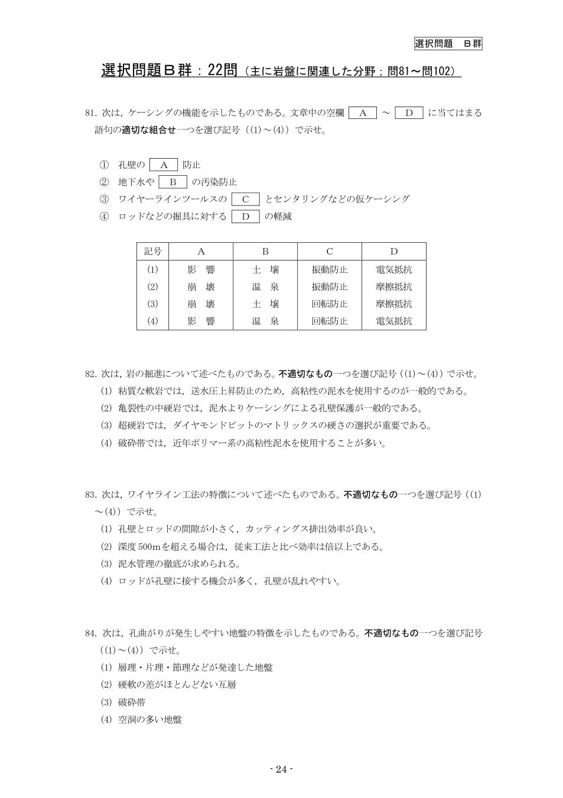
問82
B群（岩盤）
82．次は，岩の掘進について述べたものである。不適切なもの一つを選び記号（(1)～(4)）で示せ。
(1) 粘質な軟岩では，送水圧上昇防止のため，高粘性の泥水を使用するのが一般的である。
(2) 亀裂性の中硬岩では，泥水よりケーシングによる孔壁保護が一般的である。
(3) 超硬岩では，ダイヤモンドビットのマトリックスの硬さの選択が重要である。
(4) 破砕帯では，近年ポリマー系の高粘性泥水を使用することが多い。
図表・イラスト確認用：PDF紙面（25ページ）を表示
問83
B群（岩盤）
83．次は，ワイヤライン工法の特徴について述べたものである。不適切なもの一つを選び記号（(1)
～(4)）で示せ。
(1) 孔壁とロッドの間隙が小さく，カッティングス排出効率が良い。
(2) 深度500ｍを超える場合は，従来工法と比べ効率は倍以上である。
(3) 泥水管理の徹底が求められる。
(4) ロッドが孔壁に接する機会が多く，孔壁が乱れやすい。
図表・イラスト確認用：PDF紙面（25ページ）を表示
問84
B群（岩盤）
84．次は，孔曲がりが発生しやすい地盤の特徴を示したものである。不適切なもの一つを選び記号
（(1)～(4)）で示せ。
(1) 層理・片理・節理などが発達した地盤
(2) 硬軟の差がほとんどない互層
(3) 破砕帯
(4) 空洞の多い地盤
- 25 -
図表・イラスト確認用：PDF紙面（25ページ）を表示
問85
B群（岩盤）
85．次は，スイベル型ダブルチューブの注意点について述べたものである。不適切なもの一つを選
び記号（(1)～(4)）で示せ。
(1) ダブルコアチューブの整備を完全にする。
(2) 回転・送水量の調整として，一般的に高回転・高送水量にする。
(3) コア詰まりが発生した場合は，直ちにコアチューブを回収しコアを排除する。
(4) ダイヤモンドビットを使用する。
図表・イラスト確認用：PDF紙面（26ページ）を表示
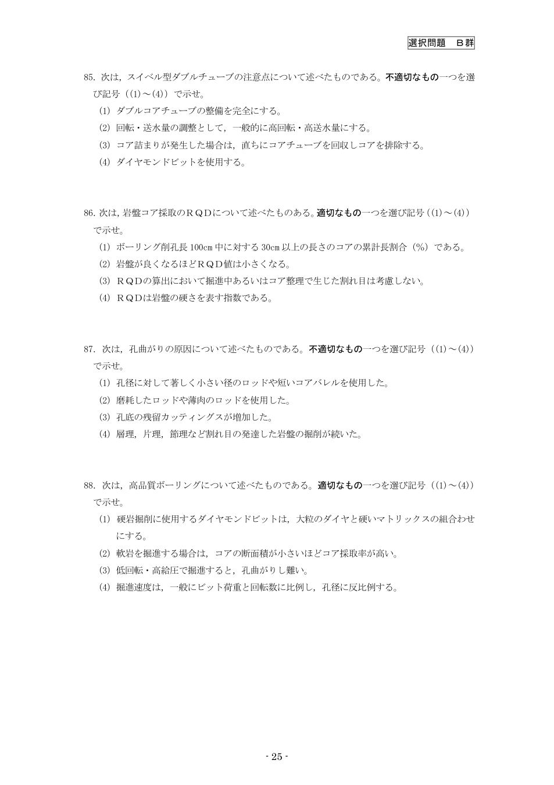
問86
B群（岩盤）
86．次は，岩盤コア採取のＲＱＤについて述べたものある。適切なもの一つを選び記号（(1)～(4)）
で示せ。
(1) ボーリング削孔長100cm 中に対する30cm 以上の長さのコアの累計長割合（％）である。
(2) 岩盤が良くなるほどＲＱＤ値は小さくなる。
(3) ＲＱＤの算出において掘進中あるいはコア整理で生じた割れ目は考慮しない。
(4) ＲＱＤは岩盤の硬さを表す指数である。
図表・イラスト確認用：PDF紙面（26ページ）を表示
問87
B群（岩盤）
87．次は，孔曲がりの原因について述べたものである。不適切なもの一つを選び記号（(1)～(4)）
で示せ。
(1) 孔径に対して著しく小さい径のロッドや短いコアバレルを使用した。
(2) 磨耗したロッドや薄肉のロッドを使用した。
(3) 孔底の残留カッティングスが増加した。
(4) 層理，片理，節理など割れ目の発達した岩盤の掘削が続いた。
図表・イラスト確認用：PDF紙面（26ページ）を表示
問88
B群（岩盤）
88．次は，高品質ボーリングについて述べたものである。適切なもの一つを選び記号（(1)～(4)）
で示せ。
(1) 硬岩掘削に使用するダイヤモンドビットは，大粒のダイヤと硬いマトリックスの組合わせ
にする。
(2) 軟岩を掘進する場合は，コアの断面積が小さいほどコア採取率が高い。
(3) 低回転・高給圧で掘進すると，孔曲がりし難い。
(4) 掘進速度は，一般にビット荷重と回転数に比例し，孔径に反比例する。
- 26 -
図表・イラスト確認用：PDF紙面（26ページ）を表示
問89
B群（岩盤）
89．次は，高品質ボーリングについて述べたものである。不適切なもの一つを選び記号（(1)～(4)）
で示せ。
(1) 回転数・給圧・送水量などを制御しながら，最適な条件となるよう掘進する。
(2) 発泡流体などの高性能循環流体を使用して掘進する。
(3) 機材準備が少ないため，従来工法と比べ掘進スピードは著しく向上する。
(4) 循環流体とコアの接触を遮断するため，スリーブ内蔵型サンプラーを使用する。
図表・イラスト確認用：PDF紙面（27ページ）を表示
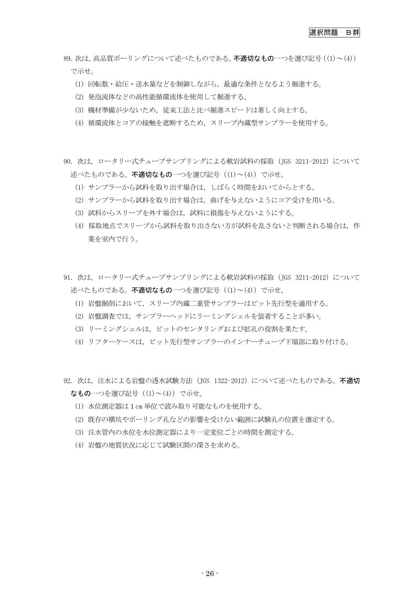
問90
B群（岩盤）
90．次は，ロータリー式チューブサンプリングによる軟岩試料の採取（JGS 3211-2012）について
述べたものである。不適切なもの一つを選び記号（(1)～(4)）で示せ。
(1) サンプラーから試料を取り出す場合は，しばらく時間をおいてからとする。
(2) サンプラーから試料を取り出す場合は，曲げを与えないようにコア受けを用いる。
(3) 試料からスリーブを外す場合は，試料に損傷を与えないようにする。
(4) 採取地点でスリーブから試料を取り出さない方が試料を乱さないと判断される場合は，作
業を室内で行う。
図表・イラスト確認用：PDF紙面（27ページ）を表示
問91
B群（岩盤）
91．次は，ロータリー式チューブサンプリングによる軟岩試料の採取（JGS 3211-2012）について
述べたものである。不適切なもの一つを選び記号（(1)～(4)）で示せ。
(1) 岩盤掘削において，スリーブ内蔵二重管サンプラーはビット先行型を適用する。
(2) 岩盤調査では，サンプラーヘッドにリーミングシェルを装着することが多い。
(3) リーミングシェルは，ビットのセンタリングおよび拡孔の役割を果たす。
(4) リフターケースは，ビット先行型サンプラーのインナーチューブ下端部に取り付ける。
図表・イラスト確認用：PDF紙面（27ページ）を表示
問92
B群（岩盤）
92．次は，注水による岩盤の透水試験方法（JGS 1322-2012）について述べたものである。不適切
なもの一つを選び記号（(1)～(4)）で示せ。
(1) 水位測定器は１cm 単位で読み取り可能なものを使用する。
(2) 既存の横坑やボーリング孔などの影響を受けない範囲に試験孔の位置を選定する。
(3) 注水管内の水位を水位測定器により一定変位ごとの時間を測定する。
(4) 岩盤の地質状況に応じて試験区間の深さを求める。
- 27 -
図表・イラスト確認用：PDF紙面（27ページ）を表示
問93
B群（岩盤）
93．次は，地すべり移動体を構成する破砕岩類について述べたものである。不適切なもの一つを選
び記号（(1)～(4)）で示せ。
(1) 地すべり移動体を構成する岩盤は，地すべり運動によって破砕する。
(2) 地すべり起源の破砕岩と造構起源の破砕岩はよく類似している。
(3) 破砕の状態が角れき岩の場合，明瞭な複合面構造が認められる。
(4) 破砕の程度を区分するためには，高品質ボーリングによるコア採取が有効である。
図表・イラスト確認用：PDF紙面（28ページ）を表示
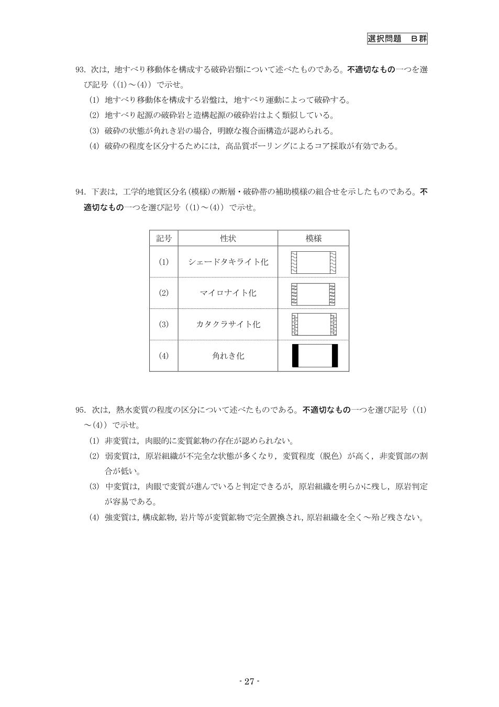
問94
B群（岩盤）
94．下表は，工学的地質区分名(模様)の断層・破砕帯の補助模様の組合せを示したものである。不
適切なもの一つを選び記号（(1)～(4)）で示せ。
記号
性状
模様
(1)
シェードタキライト化
(2)
マイロナイト化
(3)
カタクラサイト化
(4)
角れき化
図表・イラスト確認用：PDF紙面（28ページ）を表示
問95
B群（岩盤）
95．次は，熱水変質の程度の区分について述べたものである。不適切なもの一つを選び記号（(1)
～(4)）で示せ。
(1) 非変質は，肉眼的に変質鉱物の存在が認められない。
(2) 弱変質は，原岩組織が不完全な状態が多くなり，変質程度（脱色）が高く，非変質部の割
合が低い。
(3) 中変質は，肉眼で変質が進んでいると判定できるが，原岩組織を明らかに残し，原岩判定
が容易である。
(4) 強変質は，構成鉱物，岩片等が変質鉱物で完全置換され，原岩組織を全く～殆ど残さない。
- 28 -
図表・イラスト確認用：PDF紙面（28ページ）を表示
問96
B群（岩盤）
96. 次は，岩盤ボーリングのコアを，コア箱に保管する際の留意点について述べたものである。適
切なもの一つを選び記号（(1)～(4)）で示せ。
(1) 使用するコア箱は，長方形の外形で，内寸法で長さ100cm のものとする。
(2) コア箱に収納する際にコア長を調整する必要がある場合，ハンマー等で割る。
(3) 縁板および仕切板には，コア箱の右側から10cm ごとの目盛を入れる。
(4) コア箱の蓋は，原則として取り外し可能なものとする。
図表・イラスト確認用：PDF紙面（29ページ）を表示
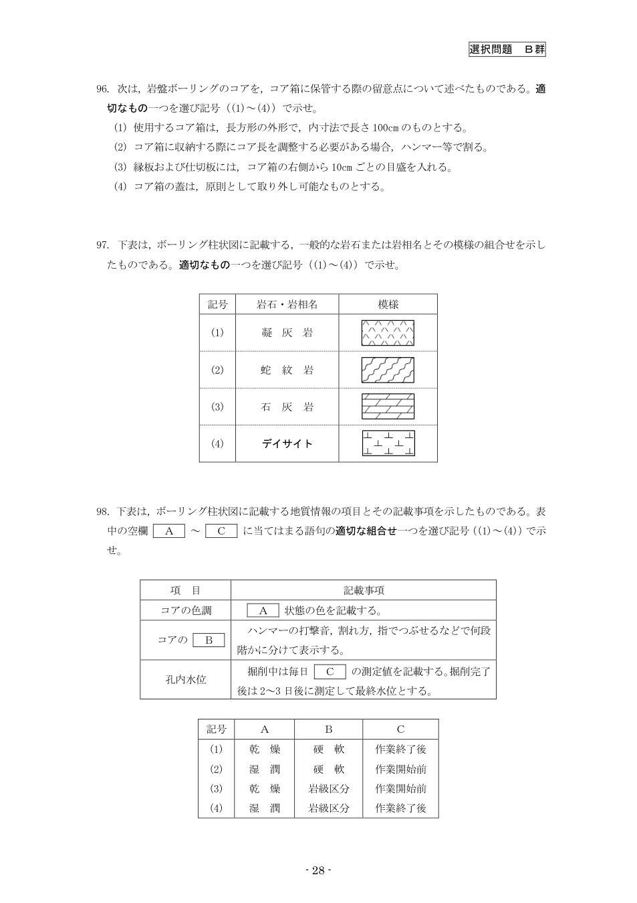
問97
B群（岩盤）
97. 下表は，ボーリング柱状図に記載する，一般的な岩石または岩相名とその模様の組合せを示し
たものである。適切なもの一つを選び記号（(1)～(4)）で示せ。
記号
岩石・岩相名
模様
(1)
凝 灰 岩
(2)
蛇
紋
岩
(3)
石
灰
岩
(4)
デイサイト
図表・イラスト確認用：PDF紙面（29ページ）を表示
問98
B群（岩盤）
98．下表は，ボーリング柱状図に記載する地質情報の項目とその記載事項を示したものである。表
中の空欄 Ａ ～ Ｃ に当てはまる語句の適切な組合せ一つを選び記号（(1)～(4)）で示
せ。
項 目
記載事項
コアの色調
Ａ 状態の色を記載する。
コアの Ｂ
ハンマーの打撃音，割れ方，指でつぶせるなどで何段
階かに分けて表示する。
孔内水位
掘削中は毎日 Ｃ の測定値を記載する。掘削完了
後は2～3 日後に測定して最終水位とする。
記号
Ａ
Ｂ
Ｃ
(1)
(2)
(3)
(4)
乾 燥
湿 潤
乾 燥
湿 潤
硬 軟
硬 軟
岩級区分
岩級区分
作業終了後
作業開始前
作業開始前
作業終了後
- 29 -
図表・イラスト確認用：PDF紙面（29ページ）を表示
問99
B群（岩盤）
99．次は，電気探査（比抵抗法二次元探査）について述べたものである。不適切なもの一つを選び
記号（(1)～(4)）で示せ。
(1) 平野から山岳地まで適用できる場所が多い。
(2) 探査深度が深くなるほど分解能は低下する。
(3) 泥岩は一般的に比抵抗値が低い。
(4) 地下水が存在すると比抵抗値が高くなる。
図表・イラスト確認用：PDF紙面（30ページ）を表示
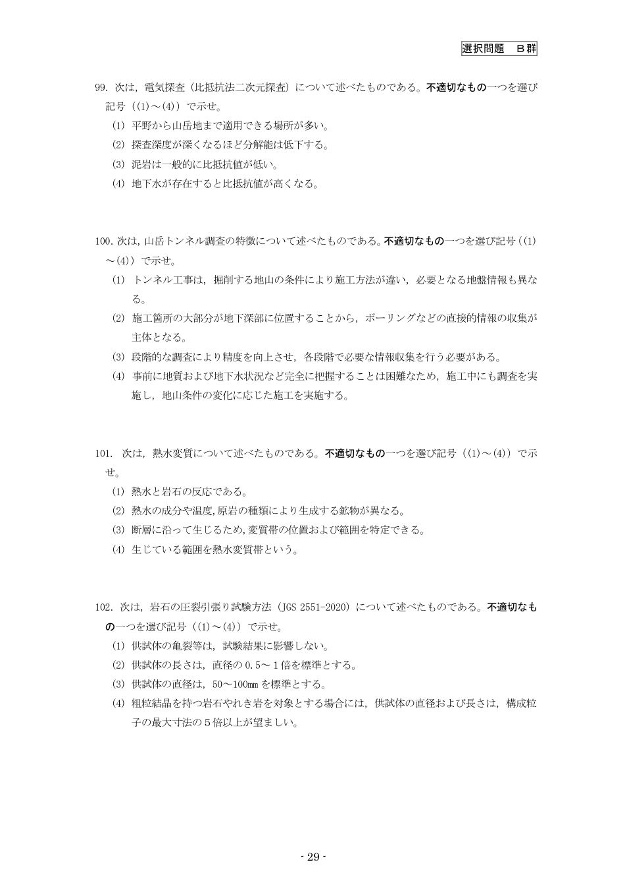
問100
B群（岩盤）
100．次は，山岳トンネル調査の特徴について述べたものである。不適切なもの一つを選び記号（(1)
～(4)）で示せ。
(1) トンネル工事は，掘削する地山の条件により施工方法が違い，必要となる地盤情報も異な
る。
(2) 施工箇所の大部分が地下深部に位置することから，ボーリングなどの直接的情報の収集が
主体となる。
(3) 段階的な調査により精度を向上させ，各段階で必要な情報収集を行う必要がある。
(4) 事前に地質および地下水状況など完全に把握することは困難なため，施工中にも調査を実
施し，地山条件の変化に応じた施工を実施する。
図表・イラスト確認用：PDF紙面（30ページ）を表示
問101
B群（岩盤）
101. 次は，熱水変質について述べたものである。不適切なもの一つを選び記号（(1)～(4)）で示
せ。
(1) 熱水と岩石の反応である。
(2) 熱水の成分や温度,原岩の種類により生成する鉱物が異なる。
(3) 断層に沿って生じるため,変質帯の位置および範囲を特定できる。
(4) 生じている範囲を熱水変質帯という。
図表・イラスト確認用：PDF紙面（30ページ）を表示
問102
B群（岩盤）
102．次は，岩石の圧裂引張り試験方法（JGS 2551-2020）について述べたものである。不適切なも
の一つを選び記号（(1)～(4)）で示せ。
(1) 供試体の亀裂等は，試験結果に影響しない。
(2) 供試体の長さは，直径の0.5～１倍を標準とする。
(3) 供試体の直径は，50～100mm を標準とする。
(4) 粗粒結晶を持つ岩石やれき岩を対象とする場合には，供試体の直径および長さは，構成粒
子の最大寸法の５倍以上が望ましい。
Ⅶ．記述式問題 (2問)
以下の問いに対する解答を答案用紙（その２）に記述せよ。
第１問
ボーリング作業計画の作成について，下表の選択番号①～⑥に示す項目から２つを選び，それぞ
れ作業計画を立案するうえでの留意点について，答案用紙の所定の欄に記述せよ。
選択番号
作業計画時の着目点
①
調査目的
②
調査場所
③
気象・海象
④
地 質
⑤
掘削深度
⑥
作業面積
第２問
地質調査は地中の状態を知ることが目的であるため，コア観察は最も基本的かつ重要なことである。
コア観察により明らかとなる，ボーリング柱状図への記載項目について，答案用紙の所定の欄に
６つ記述せよ。